Kappale 6 2024 (Apricus)
Taas laitettu tähän vain ne, joita ei ole aikaisemmissa tenteissä. Jos kysymystä on avattu heikosti wikissä, niin olen yrittänyt kirjoittaa tähän aiheesta tärkeimmät asiat tai keksiä mahdollisen kysymyksenasettelun.
6.1 Lonkan tekonivel
Valitse toinen
- Sementti vähentää periproteettista murtumariskiä
- Proteesissa 10% peroneuspareesiriski
Solution.
a
Lonkan tekonivelet tulisi aina sementöidä. Se vähentää periproteettisia murtumia (tekoniveltä ympäröivän luun murtuma).
b: Pohjehermon halvaus (peroneuspareesi) voi lonkan tekonivelleikkauksen yhteydessä syntyä joko iskiashermon, jonka toinen päähaara pohjehermo on, venytyksen seurauksena tai leikkausinstrumentin aiheuttamana. Riski tälle ei kuitenkaan ole 10%:a, vaan enemmänkin n. 1% luokkaa.6.2 Mikä on nilkan nyrjähdyksen hoito, jos nilkalle ei voi varata?
Ei vaihtoehtoja wikissä. Tässä hoitolinja:
- Jos nilkalle ei pysty varata, niin Ottawan nilkkaohjeiden mukaan otetaan rtg-kuvat nilkasta.
- Jos ei murtumaa, niin hoidetaan III-asteen vammana. Hoito on kipsisaapas 1-2vk, jonka jälkeen 2vk kontrolli, jossa jatkokuntoutusohjeet ja kipsi pois (potilaan on pystyttävä varaamaan tässä vaiheessa) -> jatkotukea ilmalastalla tai nilkkatuella 4-6 viikkoa. Varaaminen ja nilkan liikeharjoitteet, nilkka tukilastaan tuettuna, aloitetaan heti kivun salliessa. Nilkkatukea/teippausta suositellaan urheiluharrastuksissa puolen vuoden ajan.

6.3 Jeffersonin vaurio
Ei vaihtoehtoja wikissä. Tässä tärkeimmät tästä murtumasta:
- Jeffersonin murtuma on yleisin C1-nikaman (atlas) murtumatyyppi.
- Murtuma syntyy aksiaalisen kuormituksen (esim. hyppää pää edellä matalaan veteen ja osuu pohjaan) ja klassisesti luu hajautuu neljään osaan (vähän kuin olisi C1:n burst-murtuma); luufragmentit tyypillisesti leviävät eikä murtuma ahtauta spinaalikanavaa.
- Dislokoitumattomana (tai <2mm dislokoitumista) se voidaan hoitaa konservatiivisesti kovalla tukikaulurilla 3kk
- Murtuma voi myös dislokoitua. Tällöin on yleensä kyse densin takaa kulkevan poikittaisen ligamentin vauriosta, jolloin C1-massa lateralikset pääsevät etusuunnan dens-kuvassa dislokoitumaan. Tällöin se on syytä hoitaa Halovest-laitteistolla 3kk (joissain ohjeissa 6 viikkoa ja sen jälkeen vielä kovalla tukikauluksella 4-6 viikkoa).
- Jos dislokoituminen on suurta (massa lateralisten leviäminen >7mm), voi leikkaushoito olla aiheellista
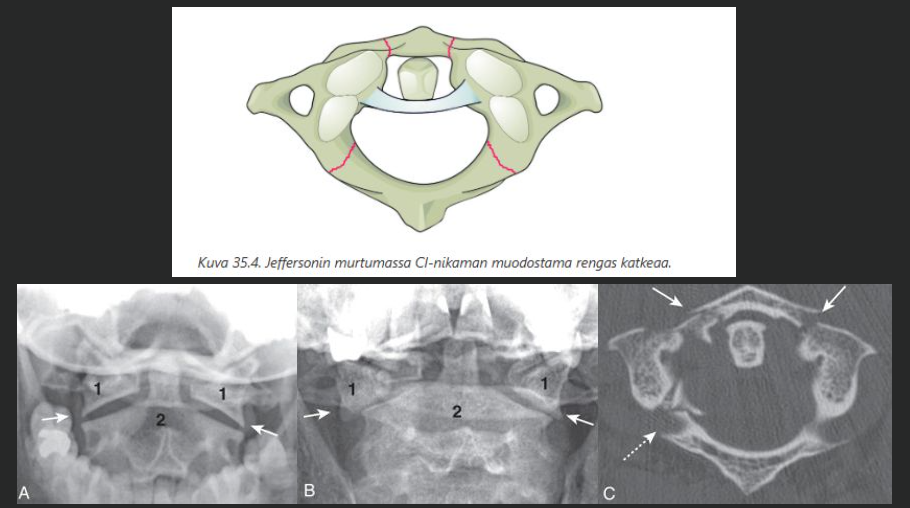
6.4 Millä kuvataan selkärankavamma
Ei vaihtoehtoja wikissä.
- Jos kaularangassa murtumaepäily -> TT on ensisijainen ja natiivirtg ei paljoa auta, koska sillä ei voi poissulkea murtumia.
- Jos matalaenerginen vamma torakolumbaalisesti (esim. epäilet osteoporoottista kompressiomurtumaa), niin natiivirtg voi toimia ensisijaisena, mutta muuten isompienergisissa vammoissa TT on ensisijainen.
6.5 Lantiomurtuman liitännäisvammat
Ei vaihtoehtoja wikissä, mutta vastaukseksi annettu: virtsaoireet. Tässä on lantiomurtumien liitännäisongelmista tärkeimmät.
- Suurienergiaisten lantiomurtumien merkittävin liitännäisongelma on massiivinen verenvuoto. Tärkein kuolemaan johtava liitännäsivamma tylpällä vammamekanismilla syntyneissä lantiorenkaan vammoissa. Traumapotilaan destot sign eli nivusalueen hematooma on vahva viite lantiorenkaan murtumasta.
- Virtsaputken ja virtsarakon vammaa on syytä epäillä, jos virtsaputken suulla todetaan verta, potilas ei pysty virtsaamaan tai prostata ei ole palpoitavissa. Virtsarakko tai virtsaputki on voinut revetä.
- Lantiohermopunoksen vammat voivat aiheuttaa mm. ulostusoireita ja alaraajojen neurologisia oireita (sfinktertonus ja aktiivinen supistus sekä alaraajojen neurologinen status tulee selvittää)
- Morel-Lavallée-vamma: Syvä nylkeytymisvamma (degloving); Iho ja subkutaanikudos repiytyvät irti lihaksesta ja faskiasta, mutta ei-avoimesti. Näin syntyneeseen suljettuun tilaan vuotaa verta ja kertyy nekroottista rasvaa. Hoitovaihtoehtoina ovat perkutaaninen dreneeraus ja avoin kirurginen revisio.
6.6 Caudaoireet
Ei vaihtoehtoja wikissä. Tässä tärkeimmät aiheesta:
- Ratsupaikkaoireyhtymä (cauda equina syndrome) kuuluu selkäkipuisen ns. punaisen lipun merkkeihin. Oireyhtymä johtuu cauda equinan kompressiosta (esim. välilevypullistuma tai trauma)
- Tyypilliset ns. cauda-oireet: tunnottomuus sukuelinalueella (ratsupaikkananestesia), vaikeus virtsata, ilman tai ulosteen karkailu, seksuaalifunktioiden häiriö
- Hälyttävän cauda equina -syndrooman (CES) toteamiseksi on siis selvitettävä sfinkterlihasten lepotonus, reflektorinen (sisäinen sfinkter) ja aktiivinen (ulkoinen sfinkter) supistus sekä ratsupaikka-alueen tuntomuutokset
- Todetessa tehdään päivystyslähete erikoissairaanhoitoon paikkaan, jossa on mahdollisuus välittömään leikkaukseen.
6.7 Humeruksen murtuman hoito - milloin ei leikata
Ei vaihtoehtoja wikissä. Tässä muutamia periaatteita.
- Proksimaalisen humeruksen hoitolinjan valintaan ei ole esitettävissä mitään yksiselitteisiä millimetri- tai astelukuja. Valintaan vaikuttavat monet asiat.
- Operatiivisesta hoidosta saavutettavissa oleva hyöty korreloi suuresti potilaan yhteistyökykyyn postoperatiivisen kuntoutusjakson aikana. Tästä syystä esimerkiksi päihdeongelmaisten olkamurtumien operatiiviseen hoitoon tulee suhtautua kriittisesti.
- Olkaluun yläosan murtumissa on osoitetavissa kaksi potilasryhmää, jotka yleensä hyötyvät operatiivisesta hoidosta; a) olkaluun yläosan kirurgisen kaulan murtumat, joissa dislokaatio on niin merkittävä, ettei edellytyksiä luutumiselle ole (käytännössä diafyysin ja caputin välillä ei kontaktia) ja b) olkaluun yläosan murtumaluksaatiot, joissa olkaluun pää on omana kappaleenaan luksoitunut pois nivelkuopastaan. Kirurgisen kaulan murtumat voidaan hoitaa levyosteosynteesillä ja luksaatiomurtumat, etenkin iäkkäillä, puolitekonivelellä. Kaikissa muissa potilasryhmissä kirurgisen hoidon aiheet ovat suhteelliset ja yksilölliset. Etenkin vanhusten pirstalemurtumissa olkaluun pään anatomian palauttaminen leikkaushoidolla näyttää tuottavan epätyydyttävän toiminnallisen tuloksen, joka ei juuri poikkea konservatiivisesta hoidosta.
Olkaluun varren murtumien hoito on yleensä konservatiivinen (olkaortoosi 8-12vk)
- Leikkaushoidon aiheet ovat murtuman huono asento seurannassa tai luutumattomuus 12 viikon kohdalla. Joskus voidaan myös leikata varhaisvaiheessa.
6.8 Polvi kipeä ja tukeva ja rtg normi
Ei vaihtoehtoja, mutta wikissä arveltu vastaukseksi näin: “saa kai varata”.
- Näinhän se on. Veripolvitilanteessa jos röntgenissä nivelet todetaan olevan paikoillaan ja murtumia ei näy, niin varaus sallitaan kivun mukaan. Potilaalle voidaan antaa kyynärsauvat, kunnes kävely sujuu ontumatta. Mikäli polvi todetaan varus- tai valgussuunnassa epätukevaksi, on polvi suositeltavaa tukea polviortoosilla.
- Veripolven rutiinikuvantamisiin myös kuuluu MRI, joka tehdään kiireellisesti (1-2vk) ja sen löydösten mukaan hoito eteenpäin
- Potilasta tulisi muistuttaa, että polvea tulisi suoristaa seistessä ja kävellessä. Muuten polvi jäykistyy, kipu pitkittyy ja paraneminen viivästyy. Suositeltavaa myös seurata kolmen K:n periaatetta: kohoasento, kylmä ja kevyt kompressio.
6.9 Polvi vääntövammasta urheilussa kipeä ja rtg normaali, mikä vamma luultavasti näkyy mri?
Ei vaihtoehtoja wikissä, mutta vastaukseksi arveltu ACL
- ACL on yleisin kiertovääntövammassa vaurioituva polven nivelside ja muutenkin yleisimmin vaurioituva polven ligamentti.
6.10 Boxerin murtuma
Ei kysymyksenasettelua wikissä. Tässä tärkeimmät aiheesta:
- Boxerin murtuma tarkoittaa pikkusormen välikämmenluun kaulan murtumaa. On tavallisin metakarpaalimurtuma.
- Tyypillinen vammamekanismi on lyöminen nyrkillä kovaan esineeseen tai seinään; tästä nimi nyrkkeilijän murtuma tuleekin.
- Hyväksyttäväasentoisen (nivel on kongruentti ja angulaatio alle 45 astetta eikä kiertovirhettä) murtuman hoito on sisarlenkit viereiseen sormeen n. 4vk ajaksi, jos potilas saa ojennettua sormen suoraksi
- Mikäli ojennusvaje -> harkittava leikkaushoitoa (pikkurillin ei tarvitse mennä hyperekstensioon, kuten normaalisti, sillä pikkurillin hyperekstension menetys ei vaikuta merkittävästi käden toimintakykyyn). Samoin jos kiertovirhettä todetaan, niin operatiivinen hoito.
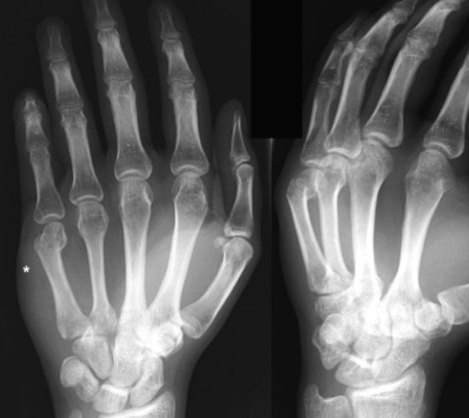
6.11 Humerusmurtuman leikkausindikaatio
Valitse yksi
- avomurtuma
- molemminpuolinen murtuma
- luutumaton 6 vko kohdalla
- joku neljäs (ei wikissä)
Solution.
a (ja b, mutta a yksiselitteisesti)
Avomurtumat hoidetaan tyypillisesti alueesta riippumatta operatiivisesti.
b: Molemminpuolinen murtuma on leikkaushoidon aihe, koska muuten käytännön eläminen on hyvin vaikeaa. Ehkä on tilanteita, joissa ei lähetä näitä leikkaamaan, joten avomurtuma on yksiselitteisemmin oikea vastaus.
c: Humeruksen diafyysimurtuma luutuu tavallisesti 8-12 viikossa. Leikkaushoidon yksi indikaatio on luutumattomuus 12 viikon kohdalla.
Muita leikkaushoidon aiheita ovat kelluva nivel (olka- tai kyynärnivel), verisuonivaurio, patologinen murtuma (tai sen uhka) sekä monivammatilanne. Värttinähermon osittaisessa tai täydellisessä halvaustilanteessa kirurginen arvio on aina aiheellinen. Spontaanin paranemisen ennuste on kuitenkin hyvä, eikä leikkaushoitoa välttämättä tarvita.
Leikkaushoito toteutetaan pääsääntöisesti levytyksellä.6.12 Dominantin käden amputoituneen peukalon haittaluokka ja invaliditeettiaste?
Ei vaihtoehtoja wikissä, mutta vastaukseksi arveltu 4 (joka on oikein); invaliditeettiaste olisi 20%. Tässä vakuutuslääketieteestä käsivammojen suhteen nopeat pointterit:
- Pysyvä vika ja haitta ryhmitellään vaikeusasteen mukaan haittaluokkiin 1-20. Yksi haittaluokka vastaa 5% invaliditeettiä.
- Haitta katsotaan pysyväksi, kun sen aiheuttanut vamma, sairaus tai vika on hoidettu loppuun (= lopullinen hoitotulos). Lopullinen hoitotulos on arvioitavissa keskimäärin noin vuoden kuluttua vammautumisesta tai viimeisestä toimenpiteestä. Korkeissa hermovammoissa aika on noin kaksi vuotta.
Haittaluokka käden vammojen suhteen määritetään näin:
- Luokitus tarkoittaa oikeaa tai parempaa kättä. Vasemman tai huonomman käden haitta on yhtä luokkaa alempi, paitsi haittaluokassa 1., jota ei anneta
- III-V kukin osa vastaa 1/3 sormea, joten laskemalla yhteen menetetyt sormien osat ja jakamalla 3:lla saadaan luku joka osoittaa, kuinka monen kokonaisen III-V sormen menetystä vamma vastaa. Peukalon ja etusormen jäsenten menetykset käsitellään erikseen.
- Jäykkä sorminivel vastaa amputaatiota tästä nivelestä, paitsi peukalossa, jossa haittaluokka on 0-2. Tunnoton osa sormea vastaa sen menetystä. Vähintään puoleksi menetetty sormijäsen vastaa koko sormijäsenen menetystä.

6.13 Fasettinivelluksaatio, mikä ei pidä paikkaansa
Valitse yksi:
- ylempi nikama siirtynyt anteriorisesti
- yleensä kons hoito riittää
- vain toinen fasetti voi olla luksoitunut
- joku neljäs
Solution.
bYleisin lokaatio fasettinivelluksaatiolle on alempi kaularanka sen mobiliteetin takia.
a ja c oikein: Fasettiluksaatiossa ylempi nikama pääsee nousemaan alemman nikaman fasetin yli ja hakautuu tämän etupuolelle joko tois- tai molemminpuolisesti.
b on väärin: Fasettiluksaation hoito on operatiivinen. Luksaatio pyritään ensin reponoimaan kallovedolla, joka toteutetaan korvanlehtien yläpuolelle paikallispuudutuksessa asetettavaa vetopihtiä käyttäen. Mikäli repositio onnistuu, voidaan ranka stabiloida etukautta tehtävällä luudutuksella. Mikäli repositio ei onnistu, tehdään leikkaus takakautta, jolloin hakautunut luksaatio päästään reponoimaan paikan päällä.6.14 Radiuksen tyyppimurtuman komplikaatiot
Valitse yksi:
- yleensä n. ulnarisvamma
- processus styloideus lunatumin(sic!) murtuma yleisin
- peukalon ekstensorijänne voi katketa vielä kipsihoidon jälkeenkin
- joku neljäs
Solution.
c
a: N. ulnarisvamma ei ole tyypillinen. Niitä on raportoitu suurienergisiin vammoihin ja alkuvaiheen suuriin virheasentoihin liittyen. Jos hermovaurio tulee, se on yleensä n. medianus (venytys tai karpaalitunnelin alueen turvotus). Rannekanavapinne voi ilmaantua värttinäluun alaosan murtuman yhteydessä akuutisti (vamman yhteydessä), subakuutisti (reposition, kipsihoidon tai leikkauksen aikana) tai viivästyneesti.
b: Os lunatumilla (puolikuuluu) ei ole processus styloideusta. Distaaliseen radiusmurtumaan liittyy noin 60 %:ssa processus styloideus ulnaen murtuma ja se on yleisin tyyppimurtuman liitännäisvamma.
c: Värttinäluun pinnalla ahtaassa kanavassa kulkeva peukalon pitkä ojentaja (EPL) jänne voi mennä poikki pienellä osalla potilaista distaalisen radiusmurtuman takia. Muiden ojentaja- tai koukistajajänteiden vauriot ovat harvinaisia. Vaurio ilmaantuu useimmiten kipsihoidon aikana tai muutaman kuukauden kuluessa kipsin poistosta (kipsi on voinut hangata jännettä ja aiheuttaa sen repeämän)
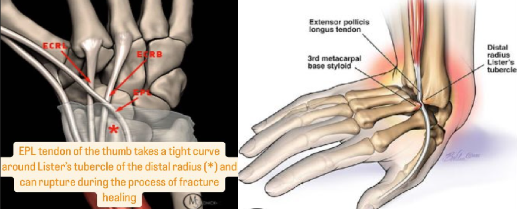6.15 Reisiluun kaulan murtumien alaluokat
Ei vaihtoehtoja wikissä, mutta tässä aiheesta tärkeimmät:
- Reisiluun kaulan murtumat (collum-murtumat) voidaan jakaa kolmeen: subkapitaalinen, transkervikaalinen ja basaalinen.
- Yleisin näistä on subkapitaalinen
- Subkapitaalisilla (reisiluun pään ja kaulan junktiossa) korkea verenkierron häiriön mahdollisuus, basaalisissa verenkierto taas voi olla säilynyt
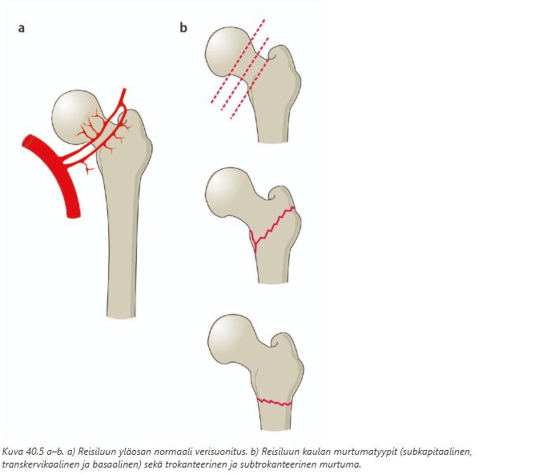
6.16 Lonkan murtumaluksaatio
Valitse yksi
- posteriorisessa raaja lyhentynyt, sisäkierrossa ja adduktiossa
- anteriorinen yleisin
- vaatii päivystyksellisen leikkauksen
- yleensä liittännäisvammana sub/pertrokanteerinen murtuma
Solution.
a
a: Klassinen kliininen asento posteriorisessa lonkkaluksaatiossa. Vammamekanismina on yleensä kojelautavamma, kun reisiluu painaa lonkan taakse. Reisiluun pään murtumat liittyvät useimmiten tähän luksaatiotyyppiin, ja niitä todetaan 6-7 %:lla potilaista.
b: Posteriorinen suunta on yleisin
c: Vaatii päivystyksellinen reponoinnin (Onnistuneen hoidon edellytyksenä on varhainen diagnoosi ja luksaation sulkeinen repositio anestesiassa (ja lihasrelaksaatiossa). Leikkausta ei aina tarvita, jos ei ole murtumaa, joka sitä vaatisi.
d: Nämä murtumat eivät yleensä liity luksaatioon. Luksaatio liittyy useammin acetabulumin murtumaan; myös reisiluun pään murtumia todetaan.
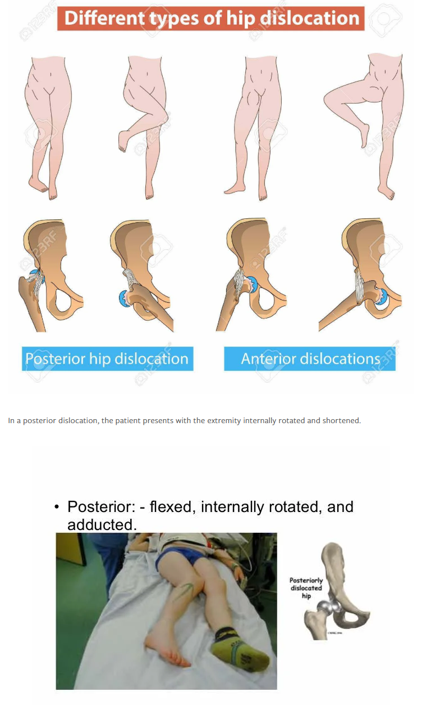6.17 Mikä on septisen artriitin yleisin aiheuttajabakteeri?
Ei vaihtoehtoja, koita vastata ilman apuja.
Solution.
S. aureus
Äkillistä kuumeista monoartriittia on pidettävä bakteerin aiheuttamana, kunnes toisin on osoitettu. Myös oligoartriitti voi olla septinen.
S. aureus on selvästi yleisin niin lapsilla kuin aikuisilla. Muita ovat mm. Strep. pyogenes, Strep. pneumoniae, Neisseria gonorrhoeae…6.18 Nuoren miehen polvesta otettu rtg-kuva, mikä löydös?
Ei esimerkkikuvaa, mutta tässä mahdollinen. Mikä löydös tässä kuvassa?
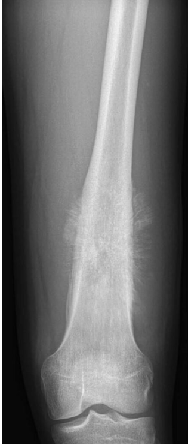
Solution.
Sunburst-efekti, herättää epäilyn osteosarkoomasta
Nuori potilas (tyypillisesti alle 25v) ja aggressiivinen periostireaktio -> maligniteettiepäily ja erityisesti osteosarkooma (sopii ikään). Myös lokaatio on osteosarkoomaan sopiva (polven ympäristössä n. 65%; olkapää tai lonkka molemmat n. 10%)
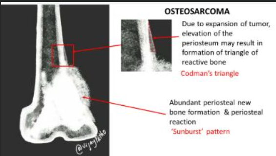6.19 Rannemurtuma volaarinen kallistus, miten hoidetaan?
Ei vaihtoehtoja wikissä. Tässä periaatteet:
- Jos distaalinen radiusmurtuma on volaarisesti kallistunut, on kyseessä todennäköisesti Smithin murtuma.
- Murtuma reponoidaan siirtämällä fragmentti dorsaalisuuntaan. Saavutetun asennon säilyttämiseksi on käytettävä olkavarresta rystysiin ulottuvaa volaarista kulmakipsilastaa, jossa kyynärnivel on suorassa kulmassa, kyynärvarsi on supinaatiossa ja ranne ekstensiossa.
- Vaikka suljetulla repositiolla saavutettaisiin hyväksyttävä asento, näillä murtumilla on taipumusta dislokoitua ja yleensä ne hoidetaan operatiivisesti. Kannattaa siis konsultoida näistä!
- Muuten jos kons hoito, niin aika samalla tavalla kuin tyyppimurtumassa (5vk lastoitus). Volaarisen kallistuskulman hyväksyttävä asento on alle 20 astetta.
6.20 iv-huumekäyttäjä terkassa viikon verran selkä kipeä, ei säteile - mitä teet?
Ei vaihtoehtoja wikissä, mutta tässä periaatteet:
- IV-huumekäyttäjien selkäkivuissa tulisi herkästi ajatella nikamien märkäistä infektiota (spondyliitti, spondylodiskiitti).
- Näiden pääoireena on kipu ja kuumeilua vain osalla potilaista (35–60 %). Kohonneet CRP ja La sensitiivisiä, mutta epäspesifisiä. Veriviljely positiivinen keskimäärin 60 %:ssa tapauksista.
- Kuvantaminen tärkeää diagnoosin kannalta, mutta natiivirtg:ssa muutokset näkyvät aikaisintaan 3 viikon kohdalla oireiden alusta. MRI on ensisijainen tutkimus ja yleensä diagnostinen (90 % tarkkuus).
- Veriviljelyssä kasvava Staphylococcus aureus (yleisin aiheuttaja), S. lugdunensis tai muu todennäköinen aiheuttaja (esimerkiksi streptokokki, E. coli tai Candida) on riittävä osoitus etiologiasta. Muussa tapauksessa on otettava TT-ohjattu tai tarvittaessa avoin luubiopsia ennen antibioottihoidon aloittamista, jos potilas ei ole kriittisesti sairas.
- Jos potilaalle on kehittynyt paikallinen märkäkertymä (abskessi), se voidaan tyhjentää TT-ohjatusti ja samalla ottaa bakteeriviljelynäyte.
- Hoito on siis ensisijaisesti iv-antibioottihoito. Jos aiheuttajabakteeri on tiedossa ja hoitovaste on suotuisa, voidaan jo kahden viikon kohdalla harkita siirtymistä tablettihoitoon. Kuuden viikon mittainen antibioottihoito on riittävä suuressa osassa tapauksista.
- Epiduraalinen abskessi on harvinainen ja vakava spinaalikanavan infektio. Se voi syntyä spondyliitin komplikaationa (30 % tapauksista) tai suoraan hematogeenisen bakteerikylvön seurauksena. Kolme yleisintä oiretta ovat selkäkipu, kuume ja neurologiset oireet, mutta oireisto ja sairauden eteneminen voivat olla hyvin vaihtelevia. Noin puolet potilaista on kuumeettomia. Epiduraalinen abskessi hoidetaan operatiivisesti päivystystoimenpiteenä, jolloin tehdään dekompressio (laminektomia), infektoituneen kudoksen kirurginen poisto (débridement) ja selkärangan instrumentaatio. Osa potilaista jää toimenpiteestä huolimatta pysyvästi halvaantuneeksi. Tärkein prognostinen tekijä on leikkausta edeltävä neurologinen status.
Lyhyesti siis: Lähetetään sairaalapäivystykseen jatkotutkimuksiin ja hoidon aloitukseen. Hoito vaatii todennäköisesti pitkää antibioottihoitoa.
6.21 Mitkä rakenteet ac-nivel?
Ei esimerkkikuvaa, tarkempaa kysymyksenasettelua tai vaihtoehtoja. Tässä tunnistustehtävä: Nimeä rakenteet, joita osoitetaan viivalla.

Solution.
Alla vastaus

6.22 Solisluumurtuma epäily
Ei kysymyksenasettelua wikissä. Todennäköisesti kysymyksessä ollut tapaturmapotilas, jolla tietyt oireet ja tulee osata epäillä solisluumurtumaa.
- Solisluu murtuu yleensä epäsuoran väkivallan, kuten kaatumisen tai liikenneonnettomuuksien yhteydessä
- Solisluunmurtumassa hartiaseutu on kivulias, eikä potilas kykene kivutta liikuttamaan yläraajaansa.
- Akuutti keskiosan murtuma (yleisin) aiheuttaa tyypillisen virheasennon, jossa lateraalinen fragmentti siirtyy yläraajan painon sekä pectoralis major- ja deltalihasten vetämänä alaspäin taakse. Mediaalinen murtuman osa siirtyy sternokleidomastoideus-lihaksen vetämänä ylöspäin ja saattaa varsinkin hoikalla potilaalla näkyä ihoa kohottavana luukappaleena.
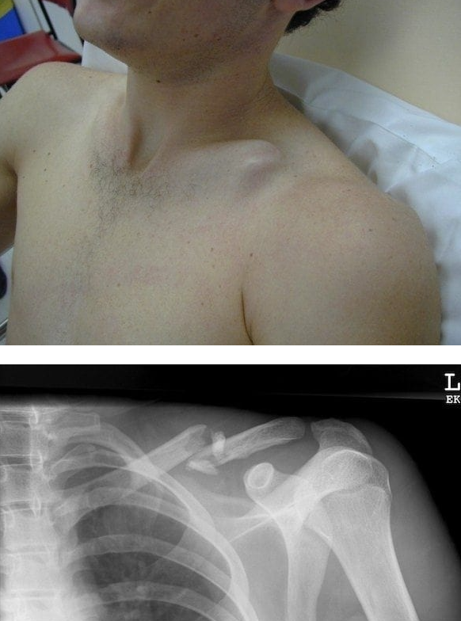
6.23 Missä th-nikama sijaitsee
Valitse yksi
- lanneranka
- rintaranka
- kaularanka
Solution.
b
Aikaisemmin oli tärppi, jossa kysyttiin Th7-lokaatiota ja silloin arvelin vaihtoehtojen olleen vaikeampia ja asetin silloin vastaukseksi “Th7 sijaitsee angulus inferior scapulaen tasolla”.
Ehkä kysymys olikin ollut tämän kaltainen eli piti vain tietää selkärangan eli alueiden nikamalyhenteet. C1-7 = kaularanka, Th1-Th12 = rintaranka, L1-L5 = lanneranka6.24 Patellaluksaatio, 1. luksaatio nuorella pojalla
Ei vaihtoehtoja tai kysymyksenasettelua wikissä. Mahdollisesti kysymyksenä ollut, että onko aihetta operatiiviselle hoidolle.
- Primaarinen (ensimmäinen) polvilumpion sijoiltaanmeno voi tapahtua missä elämänvaiheessa tahansa, mutta tyypillisesti se tapahtuu nuorilla potilailla ja esiintyvyyden huippu sijoittuu noin 15 ikävuoden kohdalle. Patellaluksaatio on nuorilla yleisin ja aikuisilla toiseksi yleisin syy veripolvelle.
- Hoitona alkuvaiheessa on luksaation reponointi ja rtg-kontrolli. Primaariluksaatiossa magneettikuvaus on aiheellista tehdä viikon sisällä luksaatiosta.
- Mikäli Laurinin projektiossa tai MK:ssa todetaan merkittävä luurustomurtumakappale (irtokappale), tulee potilas lähettää sairaalaan leikkaushoidon arvioon. Myös silloin, kun lumpio on poikkeuksellisen instabiili (laaja pehmytkudosvamma) eikä pysy reposition jälkeen paikoillaan, tulee potilas lähettää sairaalaan.
- Sen sijaan, mikäli kuvantamistutkimuksissa ei todeta luurustomurtumaa, voidaan sekä primaarinen että toistuva (habituelli) patellaluksaatio hoitaa konservatiivisesti.
- Kons hoidossa potilaalle ohjataan lihasvoimaharjoitukset. Tavoitteena on nelipäisen reisilihaksen välitön aktivaatio ja jatkossa erityisesti vastus medialis -lihasta vahvistavat harjoitteet. Polven etenevä liikeharjoittelu sallitaan alusta lähtien kivun rajoissa, immobilisaatiosta ei ole osoitettu olevan hyötyä. Täysipainovaraus sallitaan välittömästi.
- Nivelpinnasta irronnut luurustokappale kiinnitetään paikoilleen liukenevilla sauvoilla tai pienillä ruuveilla. Lapsilla saattaa sijoiltaanmenon yhteydessä irrota pelkkää rustoa sisältävä kappale, jossa ei ole näkyvää luuta lainkaan. Tällaisenkin kappaleen kiinnittämistä suositellaan, koska lapsella paranemispotentiaali on hyvä ja kappaleessa usein on subkondraalilaminan soluja, jotka mahdollistavat kappaleen kiinnittymisen. Hyvin pienet luurustopalat voidaan poistaa nivelestä tähystysleikkauksen yhteydessä. Mikäli luksaatioon liittyy laaja mediaalipuolen pehmytkudosvamma eikä lumpio pysy paikoillaan, voi varhaisvaiheen MPFL-rekonstruktio olla aiheellinen.
- Toistuva luksaatiotaipumus intensiivisestä kuntoutuksesta huolimatta on aihe operatiiviselle hoidolle. Operatiivinen hoito keskittyy pääasiassa MPFL-rekonstruktioon ja rakenteellisten poikkeavuuksien korjaukseen. MPFL-rekonstruktioleikkaus tehdään useimmiten käyttäen hamstring-jännesiirrettä (gracilis- tai semitendinosus-jänne). Arviolta 50 % konservatiivisesti hoidetuista primaariluksaatioista päädytään myöhemmin hoitamaan kirurgisesti.
Lyhyesti: primaariluksaatio nuorella pojalla -> hoito ensisijaisesti konservatiivinen, jos ei murtumia tai merkittäviä rustovaurioita todeta.
6.25 Kaulanikamat - minkälainen fiksaatio
Ei tarkempaa kysymyksenasettelua wikissä tai vaihtoehtoja.
- Kaularangan vammoissa ja murtumissa on pääasiassa kolme immobilisaatiokeinoa: kovat tukikaulurit, Halovest-tyyppiset liivit sekä stabiloiva kirurgia etu- tai takakautta
- Kirurginen hoito on viime vuosikymmeninä kehittynyt etenkin etukautta tehtävien deesien osalta, ja kokonaisuutena operatiivisen hoidon osuus on lisääntymässä - Ensisijainen vaihtoehto kaularangan luksaatioiden ja murtumien operatiivisessa stabiloinnissa on etukautta tehtävä luudutus
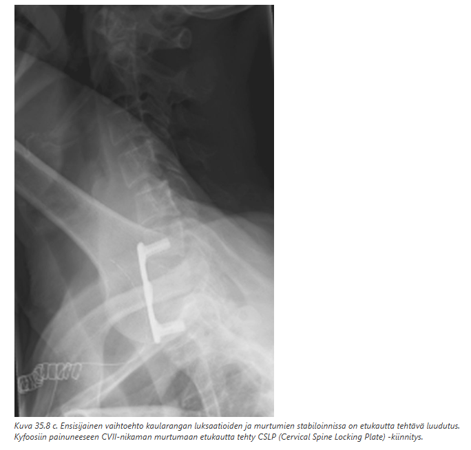
6.26 85v nainen, bajonettivirheasento
Ei kysymyksenasettelua wikissä, mahdollisesti kysytty tarvitaanko operatiivista hoitoa.
- Ikääntyneillä potilailla ranteen lopullisen virheasennon ja ranteen kliinisen paranemisen (koetut oireet ja mitattu toimintakyky) välillä ei ole todettu selkeää yhteyttä. Heidän osaltaan tuleekin käyttää erityistä harkintaa, kun suunnitellaan virheasentoon luutuneen murtuman leikkaushoitoa asennon korjaamiseksi.
- Jos potilas olisi hieman nuorempi ja aktiivinen, niin kirurgista hoitoa voitaisiin harkita, jos ranteen toimintakyky on heikentynyt merkittävästi. Tämän ikäisellä naisella ei kuitenkaan enää lähdetä kovinkaan helposti miettimään operaatiota, vaikka todettaisiinkin bajonettivirheasento (dinner fork deformity) rannemurtuman lopputuloksena.
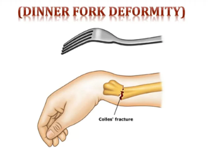
6.27 Mikä on mallet deformiteetti?
Ei vaihtoehtoja, mutta tulisi osata vastata ilman vinkkejäkin.
Solution.
DIP-nivelen ekstensorivamma
Mallet-vamma tarkoittaa sormen ojentajajänteen repeytymistä kiinnityskohdastaan kärkijäsenen tyven dorsaalipuolelta joko sellaisenaan (mallet finger) tai pienen luupalan kanssa (mallet fracture)
Vammamekanismi on ojennetun sormen kärjen äkillinen koukistumisen sormen kärkeen kohdistuneen suoran iskun seurauksena
Koska ojennusvoima puuttuu, kärkijäsen jää koukistusasentoon ja sormi muistuttaa pientä pajavasaraa; tästä nimitys vasarasormi (mallet finger)
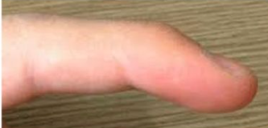6.28 TK-osastolla potilas, jolla 10vrk sitten lonkka tekonivel, haava tihkuttaa - mitä teet?
Ei vaihtoehtoja wikissä.
- Tekonivelleikkaus on aina infektioriskiherkkä toimenpide. Haavan vuotaminen 10vrk leikkauksesta on poikkeava löydös ja tulisi herätä epäily varhaisesta tekonivelinfektiosta. Vierasesineinfektioita ei tule jäädä seurailemaan tk:seen, vaan tulee nopeasti konsultoida leikkauksen tehnyttä yksikköä.
6.29 Altistaako bisfosfonaatit femur-murtumille?
Ei vaihtoehtoja wikissä, koita ilman vinkkejä.
Solution.
Kyllä, atyyppisen reisiluun murtuman riski koholla
Osteoporoosin bisfosfonaattihoitoa (tai denosumabihoitoa) saavilla potilailla esiintyy subtrokanteerisia tai diafyysialueen lateraalisia reisiluun rasitusmurtumia; kutsutaan atyyppiseksi reisiluun murtumaksi. Näihin liittyy huomattava murtumariski, joten murtuman tunnistaminen on tärkeää.
Murtuma näkyy röntgenkuvassa vain vähäisenä kortikaalisena kohoumana, ja magneettitutkimuksessakin hohkaluun turvotus on vähäisempää kuin tavallisen rasitusmurtuman aiheuttama turvotus
Muutos on usein molemminpuolinen, joten molempien puolien kuvaus on aiheellinen

6.30 Atyyppinen reisiluun murtuma?
Ei vaihtoehtoja wikissä, mutta tässä todennäköisesti haetaan samaa kuin yllä olevassa kysymyksessä.
6.31 Hematooma jalkapohjassa, rtg kuva
Ei kysymyksenasettelua wikissä, mutta todennäköisesti ollut: Hematooma jalanpohjassa potilaalla trauman jälkeen, otetaanko rtg (tai sitten oli potilas, jolla oli hematooma jalanpohjassa ja rtg kuvasta piti tunnistaa vamma)
- Todennäköisesti haetaan tärkeää keskijalan vammaa eli Lisfrancin vammaa. Lisfrancin niveltason vamma voi olla vaikeaa tunnistaa, sillä rtg ja kliiniset löydökset voivat olla vähäisiä. Tärkeä statuslöydös kuitenkin voi olla aristus/mustelma jalkaterässä/jalkapohjassa.
- Jos epäily jää rtg:n jälkeenkin, niin tulee ottaa TT
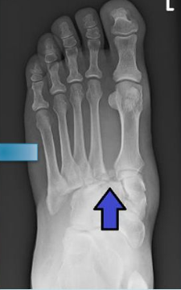
6.32 Kipeä nilkka, turvotusta ja hematoomaa jalkapöydälle asti lateraalisesti - otetaanko jalkapöydän rtg
Wikissä sanoitettu kysymys näin.
Periaatteessa ei ole kysymyksenasettelun perusteella yksiselitteistä, otetaanko jalkapöydän rtg, mutta kyllä tässä tilanteessa voisi sen ottaa, koska lateraalinen hematooma viittaa mahdolliseen 5. metatarsaalin tyven murtumaan. Ei mene ihan Ottawan säännöstön mukaan, mutta käytännön työssä voisi kyllä ottaa. Nilkan röntgenkuvasta ei siis esimerkiksi voi todeta tarsometatarsaalialueen murtumaluksaatioita tai viidennen jalkapöytäluun proksimaalista murtumaa, joka syntyy usein nilkan vääntymisen seurauksena.
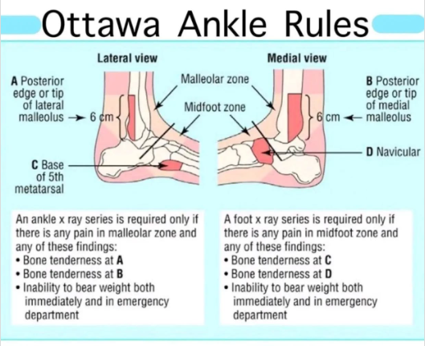
6.33 V metatarsaalin avulsiomurtuman hoito?
Ei vaihtoehtoja wikissä, koita vastata ilman vinkkejä.
Solution.
Konservatiivinen
Elastinen sidos (soft cast) ja kantavaraus (päkiäponnistuksen rajoittaminen) 6 viikon ajan
Jalan vääntövammassa, esimerkiksi nilkan inversionyrjähdyksessä, voivat jalkapohjan kalvojänteen lateraalinen osa ja peroneus brevis -jänne avulsoida viidennen jalkapöydänluun proksimaalipäähän murtuman
Se on tavallisesti hyväasentoinen ja hoidetaan konservatiivisesti. Sen seurannassa suositellaan 1-2 viikon kohdalla otettavaa röntgenkuvausta asennon pysymisen varmistamiseksi.
Yli 2mm dislokoituneet oper harkinta
Älä sekoita tätä avulsiomurtumaa Jonesin murtumaan tai proksimaalisen diafyysin rasitusmurtumaan. Jonesin murtuma paranee huonosti ja vertailevien tutkimusten perusteella kirurgista murtumakiinnitystä suositellaan myös hyväasentoisissa Jonesin murtumissa, ellei vasta-aiheita, kuten iho-ongelmia, ole. Rasitusmurtuman hoito on rasituksen vähentäminen.
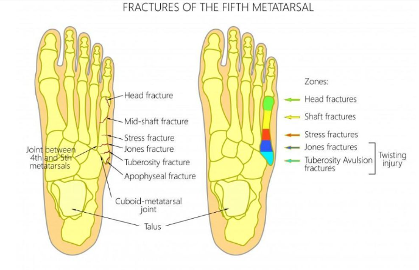6.34 Isovarpaan seesamluumurtuman hoito?
Ei vaihtoehtoja wikissä, tässä tärkeimmät aiheesta:
Seesamluumurtumat ovat tyypillisiä rasitusmurtumia, mutta voivat syntyä myös akuutisti MTP1:n hyperdorsifleksiossa.
Lähes jokaisessa tutkimuksessa suositellaan rasitusperäisissä seesamluun murtumissa alkuun immobilisaatiota. Tyypillisen protokollan mukaan seesamluun murtumaa hoidetaan 6 viikon immobilisaatiolla isovarvas tuettuna plantaarifleksioon. Immobilisaatio toteutetaan käyttäen jäykkää tukea, kävelykipsiä, soft castia tai siirrettävää kipsiä
Immobilisaatiossa isovarpaan tulisi olla hieman plantaarifleksiossa tai vähintään neutraalissa asennossa. Eri lähteiden mukaan immobilisaatiojakso voi kestää 4-8 viikkoa
Murtumaa hoidetaan immobilisaatiolla kunnes oireet vähenevät, jonka jälkeen pyritään keventämään isovarpaan rasitusta vähentämällä sen dorsaalifleksiota jäykällä kengällä ja/tai pohjallisella. Isovarpaan teippaaminen plantaarifleksioon voi myös helpottaa oireita
Kirurgia tyypillisesti vasta, jos kons ei auta 3-12 kuukaudessa. Leikkaus määrittyy seesamluun kunnon mukaan, minkä perusteella osa tai molemmat seesamluista voidaan poistaa. Seesamluihin voidaan myös tehdä luusiirre tai joissain tapauksissa niistä voidaan poistaa pieniä osia.
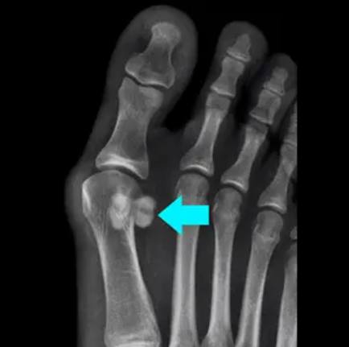

6.35 Lisfrancin murtumaluksaatio
Ei kysymyksenasettelua wikissä, tässä tärkeimmät aiheesta:
- Lisfrancin nivelentason muodostavat vaaja- ja kuutioluut (cuneiforme-luut ja cuboideum), jotka niveltyvät metatarsaaliluihin
- Lisfrancin niveltasossa cuneiforme medialen ja MT II (ja III) tyven välissä on ns. Lisfrancin ligamentti
- Lisfrancin vammassa ligamentin rikkoutuessa cuneiforme mediale ja metatarsaali 2 tyvi pääsevät erkaantumaan, jolloin myös MT1 ja MT2 erkanevat toisistaan
- Kliiniset ja kuvantamislöydökset ovat usein vähäisiä, ja hoitamattomana vammat voivat aiheuttaa jalan biomekaniikan häiriön ja nivelrikon. Kliiniset löydökset monesti rajoittuvat palpaatioarkuuteen ja jalkapohjan mustelmaan
- Vammamekanismina on suoran iskun lisäksi joko aksiaalisuunnan voima, joka kohdistuu plantaarifleksiossa olevaan jalkaan (esim. putoaminen), tai etummaiseen jalkaan kohdistuva abduktio silloin kun takimmainen jalka on fiksoituneessa asennossa. Jälkimmäinen vammamekanismi tapahtuu esimerkiksi silloin, jos ratsastaessa jää jalastaan roikkumaan jalustimen varaan
- Jos epäily vammasta jää, niin TT kannattaa ottaa (rtg ei sulje vammaa pois)
- Vaatii usein kirurgisen hoidon,. Jos niveltaso kongruentti ja stabiili, niin kons hoito mahdollinen (6vk kipsisaapas/ortoosi ja varaus kivun mukaan)
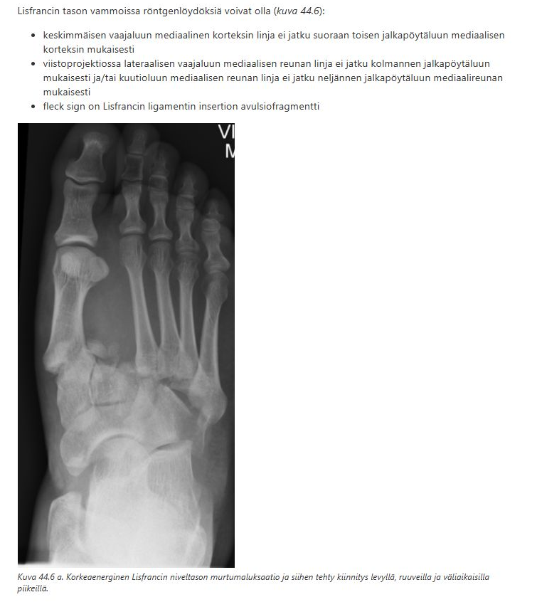
6.36 Pohjeluu - sääriluu murtumat
Esiintyykö yksin/yhdessä ja millainen vammaenergia
Solution.
Yleensä yhdessä ja silloin usein korkeaenerginen vamma
6.37 Murtuman luutumiseen vaikuttavat tekijät
Ainoa vaihtoehto/kysymyksenasettelu wikissä on tämä “Hidastaako murtumahematooman evakuointi luutumista?”
Solution.
Vastaus on kyllä.
Murtumahematooman syntyminen on tärkeä osa luunmurtuman paranemisprosessia, ja siihen liittyy verihiutaleiden aggregoituminen murtuma-alueelle. Ne tuottavat osaltaan mitogeenisiä tekijöitä endoteeli- ja mesenkyymisoluille. Murtumahematoomalla on oma fysiologinen tehtävänsä. Sen poistaminen hidastaa luunmurtuman paranemista. Tämä on yksi syy, miksi pitkien luiden ydinnaulaus pyritään suorittamaan suljetusti ilman murtumakohdan avausta. Vastaavaa leikkaustekniikkaa (epäsuora murtuman reduktio ja perkutaaninen mini-invasiivinen levykiinnitys) on kehitetty myös pitkien luiden levyfiksaatioon ja se soveltuu osalle potilaista.
Muita hidastavia tekijöitä ovat infektiot, pehmytkudosvauriot, avomurtumat, korkea ikä, tupakointi, diabetes…6.38 Avaskulaarinekroosi
Ei kysymyksenasettelua tai vaihtoehtoja wikissä, tässä tärkeimmät aiheesta:
- Avaskularinen nekroosi (AVN) eli osteonekroosi johtuu luun ja sen ytimen infarktista.
- Yleisin sijainti tälle on reisiluun pää, ja taustalla on useimmiten a. circumflexa medialiksen insuffisienssi. Femoraliksen kaulan murtumissa suositaan osittain tästä syystä tekonivelleikkauksia (nuorilla ja hyväluisilla aikainen interni fiksaatio voi olla mahdollinen). Collummurtumista subkapitaalisella on korkein riski AVN:lle (basaalisilla matalin) ja riski nousee dislokaation pahentuessa.
- Avaskulaarista nekroosia epäiltäessä verenkierron arviointiin käytetään perfuusio-MRI -tutkimusta
- Muita tyyppipaikkoja avaskulaariselle nekroosille ovat polvi, olkapää ja talus. Myös ranne (erityisesti veneluu), leuka ja jalka.
6.39 Yläraajan kierteinen murtuma ja poikkimurtuma luutumisajat?
Ei vaihtoehtoja wikissä, koita vastata ilman vinkkejä
Solution.
Kierteinen = 6vk, poikki = 12vk
Alaraajan murtumissa 2x yläraajan
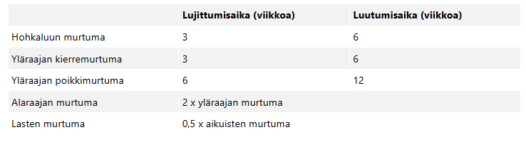6.40 Missä vaiheessa ajatellaan, että on consolidatio tarda kyseessä?
Ei vaihtoehtoja wikissä, koita vastata ilman vinkkejä
Solution.
12vk
Luutuminen katsotaan hidastuneeksi (delayed union, consolidatio tarda), jos 12 viikon kohdalla ei ole todettavissa kliinisiä ja radiologisia merkkejä luutumisen käynnistymisestä.
Kliinisesti murtumassa todetaan tällöin hetkumista ja kipua, vaikka aikataulun mukaan sen pitäisi olla lujittunut.
Murtuma katsotaan luutumattomaksi (non-union), jos murtuman paraneminen ei täytä kliinisiä ja radiologisia luutumisen kriteereitä 6‒12 kuukauden kohdalla eikä paranemisessa ole tapahtunut merkittävää edistymistä seurannan aikana. Kun murtuma on luutumaton, murtumakohta hetkuu huomattavasti keskimääräisen paranemisajan jälkeen. Murtumassa on tällöin vain fibroottinen liitos.6.41 Pikkurillin murtuma halutaan kipsata safe-asentoon, mitkä sormet kipsiin?
Ei vaihtoehtoja wikissä, koita vastata ilman vinkkejä
Solution.
Pikkurilli ja nimetön
6.42 Quadriceps-jännerepeämä
Ei vaihtoehtoja wikissä, tässä tärkeimmät aiheesta:
- Tärkein polven alueen jännevamma on nelipäisen reisilihaksen (m. quadriceps femoris) jänteen repeämä; n- 2-3x yleisempiä kuin patellajänteen repeämät
- Nelipäisen reisilihaksen jänteen repeämiä todetaan yleensä yli 45-vuotiailla, lumpiojänteen repeämiä alle 45-vuotiailla potilailla
- Repeämä sijaitsee tyypillisesti lähellä polvilumpion yläreunaa.
- Aiheuttaja on yleensä pieni vammaenergia liukastumisen tai portaissa kaatumisen yhteydessä; voi myös tapahtua mm. kehonrakentajilla painavan kyykyn yhteydessä (varsinkin jos ei ole naturelli). Mekanismina siis nelipäisen reisilihaksen eksentrinen supistuminen polven ollessa koukistettuna (vrt. patellajänteen repeämä, joka yleensä suora vamma)
- Rtg:ssa voidaan todeta patella baja (patella hieman matala) tai normaalikorkuinen patella (vrt. patellajänteen repeämä, jossa patella alta eli korkea patella, kun ehjä qceps vetää sitä ylöspäin)
- Täydellisissä repeämissä polven ojennus ei onnistu (ekstensoriaparaatti rikki). Polvilumpion yläpuolella jänteessä palpoituu usein selvä kuoppa. Yleensä kliininen tutkiminen riittää diagnoosiksi.
- Hoito on ensisijaisesti operatiivinen; suturoidaan jänne takaisin patellaan.
6.43 Hamstringruptuura
Valitse yksi:
- polven vastustettu koukistusvoima heikko
- keski-ikä 70v,
- vammamekanismi lonkan hyperektensio
- joku (ei wikissä)
Solution.
a
a: Hamstringsit osallistuvat lonkan ekstensioon ja polven koukistukseen.
b: Keski-ikä potilaalle on keski-ikä (ei ihan 70v)
c: vammamekanismi lonkan hyperfleksio (liukastuminen spagaattiin tyypillisesti)6.44 Olkanivelluksaatio, rtg-kuva - mikä murtuma?
Ei esimerkkikuvaa, mutta toisista tärpeistä voi päätellä mitä on ollut kuvassa. Nimeä kuvan murtuma.
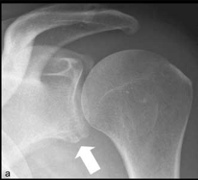
Solution.
Luinen Bankart
Olkanivelen anteriorisessa luksaatiossa voi tapahtua olkanivelen etualaosan rustoisen renkaan (labrum) repeämä (bankart lesion), jonka yhteydessä voi irrota myös etureunan luukappale (bony bankart).
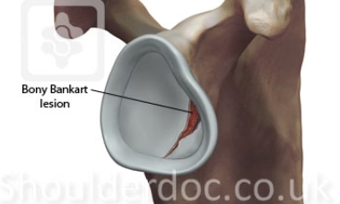6.45 Olkanivelluksaatio, rtg-kuva - mikä murtuma?
Ei esimerkkikuvaa, mutta toisista tärpeistä voi päätellä mitä on ollut kuvassa. Nimeä kuvan murtuma.
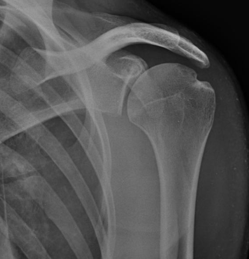
Solution.
Hill-Sachsin leesio
Hill-Sachsin vaurio tarkoittaa olkanivelen anteriorisen luksaation takia tapahtuvaa posterolateraalisen humeruksen pään kompressiomurtumaa.
Tapahtuu usein Bankartin leesion kanssa
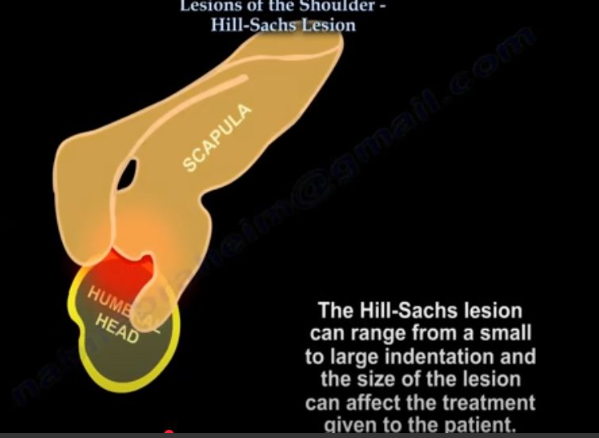6.46 Miten tutkit etusormen rystynivelen sivunivelsidevamman?
Ei vaihtoehtoja wikissä, mutta pitäisi osata vastata ilman vinkkejäkin.
Solution.
Rystynivel täydessä fleksiossa
MP-nivelten fleksio auttaa jäykistämään MP-nivelen ja auttaa lateraalistabiliteetin tutkimista (suorana heiluvat sivuille muutenkin)
PIP- ja DIP-nivelien kollateraaliligamenttien testauksessa ei tarvitse miettiä onko MP-nivel fleksiossa
Peukalon MP-nivelen kollateraalistabiliteetti kannattaa testaa lievemmässä fleksiossa (ehkä n. 30 astetta), kun taas muiden 90 asteen fleksiossa
Kollateraaliligamentteja on ulnaarisella ja radiaalisella puolella -> vääntämällä toiseen suuntaan testaan toisen puolen kollateraaliligamentin (esim. radiaalisella väännöllä testaat ulnaarisen kollateraalin)
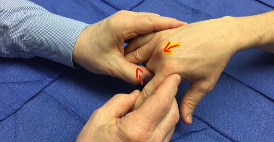6.47 Ranteen veneluun murtuma?
Ei vaihtoehtoja, mutta wikissä epäillyn vastauksen perusteella kysymys tässä nyt voisi olla, että minkä ikäisillä ja sukupuolisilla veneluun murtuma tyypillisimmin ilmenee?
Solution.
Nuorilla miehillä
6.48 Miten tutkit keskisormen pinnallisen fleksorin toiminnan?
Ei vaihtoehtoja wikissä, mutta tulisi osata vastata ilman vinkkejäkin.
Solution.
Fiksoi muut sormet pöytään ja pyydä potilasta fleksoimaan keskisormeaFDP kiinnittyy kärkijäseneen, FDS keskijäseneen
FDP osallistuu epäsuorasti PIP:n fleksioon, joten sen toiminta tulee estää, kun halutaan testata FDS
Syvä koukistaja testataan näin: Fiksoi proksimaalinen ja keskimmäinen falanksi pöytään ja pyydä potilasta fleksoimaan kärkijäsentä.

6.49 Mikä murtuma?
Ei esimerkkikuvaa, mutta tässä epäiltyyn vastaukseen sopiva kuva.
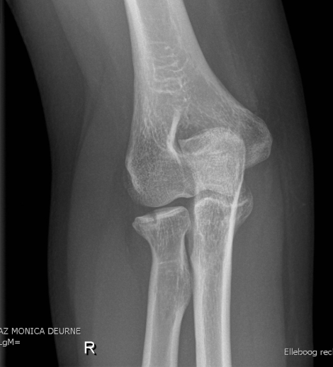
Solution.
Caput radiin murtuma
Kyseessä on dislokoitumaton radiuksen pään murtuma (eli siis Mason I-luokan murtuma; ei tarvitse osata)
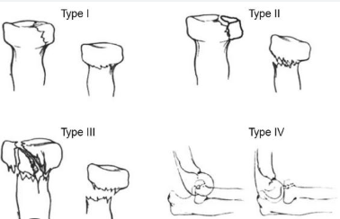6.50 Mikä murtuma?
Ei esimerkkikuvaa, mutta tässä epäiltyyn vastaukseen sopiva kuva.
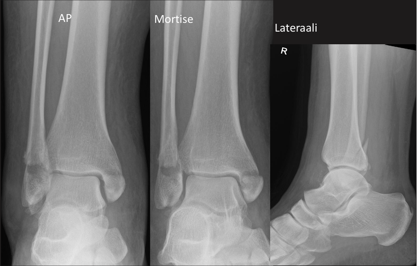
Solution.
Trimalleolaarimurtuma ja syndesmoosivammma
6.51 Lantiorenkaan murtuman luokittelu
Ei kysymyksenasettelua wikissä, mahdollisesti kyseessä rtg-kuvasta luokittelu. Tunnista kuvasta lantionrenkaan murtuma ja luokittele se AO/OTA-luokituksen mukaan.
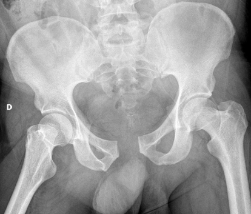Solution.
Open book -murtuma (AO/OTA B3)
Kyseessä on lantion instabiili murtuma, jossa lantio muistuttaa avointa kirjaa. Symfyysi on revennyt ja takaosat ovat pettäneet.
Symfyysiraon leviäminen on merkki symfyysin repeämästä, jolloin joko toinen tai molemmat lantiopuoliskot ovat instabiileja ulkokiertoon. Täydellisen symfyysirepeämän ensisijainen hoito on leikkaus.
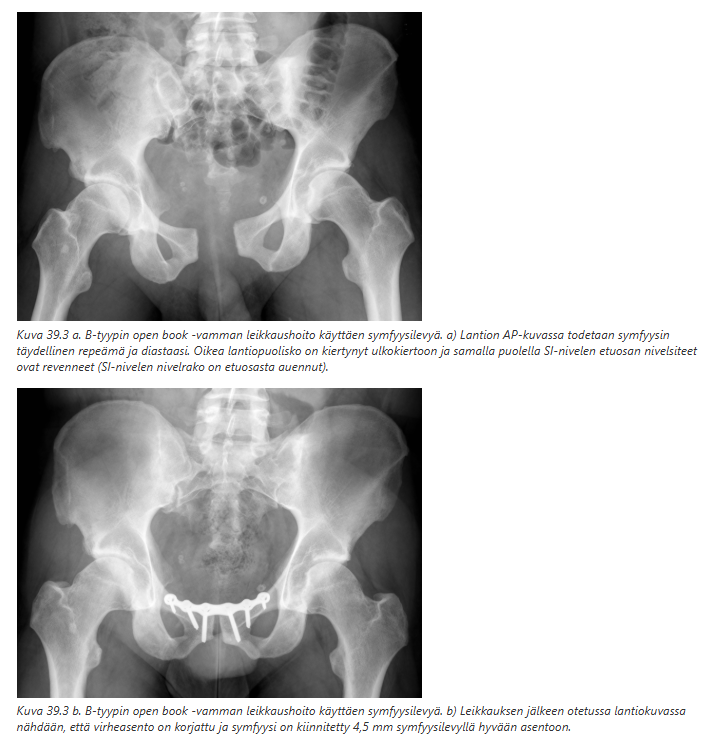 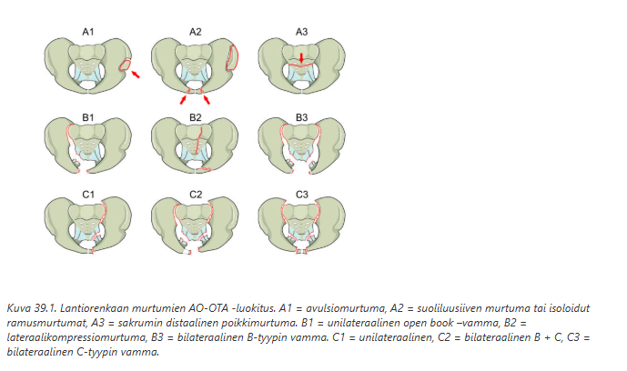6.52 Traumahälytyksenä potilas (korkeaenerginen trauma), tutkit ja epäilet selkärankavammaa, mitä teet?
Ei vaihtoehtoja, mutta otat TT (trauma TT) ja jos ei ole vielä sitä asetettu niin kauluri.
6.53 Avomurtuma tyyppi III, miten hoidat?
Avomurtumat tarkastetaan steriilein hansikkain ja pestään keittosuolalla. Selvät virheasennot voidaan yrittää korjata. Haavat peitetään steriilein taitoksin. Muuten hoito kuuluu operatiiviseen hoitoon. Haavaan tehdään kirurginen puhdistus ja nähdään tarkemmin pehmytkudosvaurioiden laajuus ja niiden vaikeus. Murtuma usein fiksoidaan samassa yhteydessä kuin haava suljetaan.
6.54 Potilas astunut kuoppaan, jalka turvonnut ja jalanpohjassa hematooma, mitä teet?
Ei vaihtoehtoja, mutta:
- Herättää epäilyn Lisfrancin vammasta. Lisfrancin niveltason vamma voi olla vaikeaa tunnistaa, sillä rtg ja kliiniset löydökset voivat olla vähäisiä. Tärkeä statuslöydös kuitenkin voi olla aristus/mustelma jalkaterässä/jalkapohjassa.
- Rtg tai jopa suoraan TT (Ainakin rtg:n jälkeen, jos se ei tuota diagnoosia. Rtg on usein ei-diagnostinen Lisfrancin vammalle ja TT kannattaa tehdä, jos epäily jää. TT tarvitaan myös mahdollisen operatiivisen hoidon suunnitteluun).
6.55 Koukistajajänteen leikkaus, kuinka pitkäksi aikaa immobilisoit sormen?
Ei vaihtoehtoja wikissä, koita vastata ilman vinkkejä.
Solution.
Sormi mobilisoidaan nopeasti 2-5vrk kuluessa suojalastan avulla
Joissain ohjeissa jopa 1-2vrk korjauksen jälkeen. Suoranaista kunnon immobilisaatiota ei siis harrasteta. Kontrolloitu mobilisaatio on välttämätöntä, koska tehty jännesauma ei kestä vapaata mobilisaatiota
Kontrolloitu mobilisaatio edellyttää ohjeiden noudattamista, joten alle 5-vuotiailla ja ko-operoimattomilla potilailla on käytettävä kipsi-immobilisaatiota.
Sormen vapaa kuormittamaton mobilisaatio sallitaan 6 viikon kuluttua (lastahoito päättyy) ja kuormitus 8-12 viikon kuluttua korjauksesta.
Vrt. ojentajajännekorjauksiin, joissa sormi immobilisoidaan leikkauksen jälkeen 2-5 viikon ajaksi
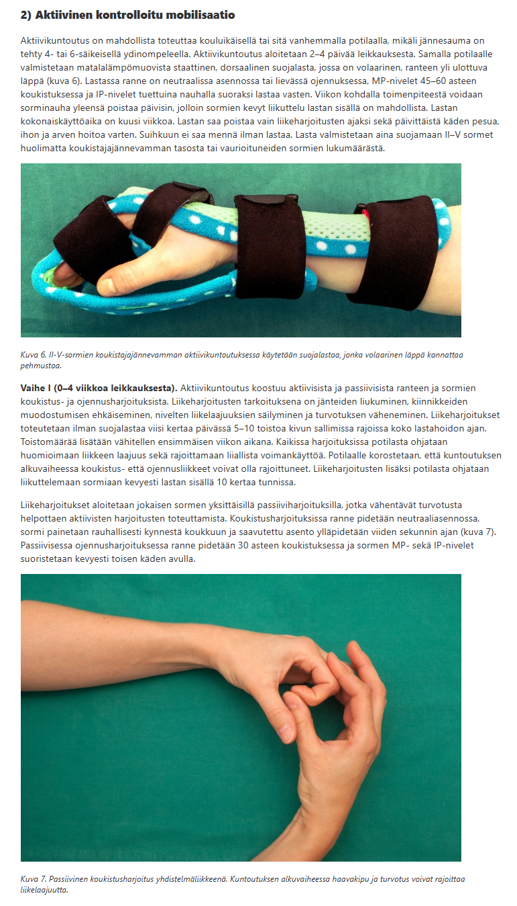6.56 Säärimurtumille tyypillistä?
Ei selkeää kysymyksenasettelua wikissä, mutta listattu aiheita tällä tavalla: “vammamekanismi, miten hoidetaan aikuisilla, vaikuttaako pehmytkudoksen kunto murtuman hoitoon jne.”
Vammamekanismi = Säärimurtumat voidaan jakaa trauman energiasisällön mukaan pieni- ja suurienergisiin, ja edelleen väkivallan luonteen mukaan epäsuoran ja suoran väkivallan aiheuttamiin. Tavallisimmin säärimurtuma syntyy epäsuoralla vammamekanismilla säären kiertovääntövamman seurauksena. Tällöin sääriluun distaalikolmanneksen raja-alueella todetaan tyypillinen viisto ja kierteinen murtuma. Pohjeluu murtuu eri tasolta. Suora väkivalta saa aikaan poikkimurtumia, joiden pirstaleisuus korreloi vammaenergiaan
Miten hoidetaan aikuisilla = Käytännössä aina operatiivisesti (joskus harvoin aikuisillakin dislokoitumattomat ja stabiilit kons mutta yleensä oper aina aikuisilla; lapsilla voi käyttää enemmän kons hyväasentoisten hoidossa). Ensisijainen leikkausmenetelmä on salpaydinnaulaus. Lähellä polvi- tai nilkkaniveltä sijaitsevien säärimurtumien kiinnityksessä voidaan käyttää lukkolevytystä. Lopullinen murtumahoito pyritään toteuttamaan viivytyksettä, koska murtuman varhainen kiinnitys vähentää kipua ja vuotoa sekä pienentää komplikaatioriskiä.
Vaikuttaako pehmytkudoksen kunto murtuman hoitoon = Kyllä. Jos haava on syntynyt terävän luusärmän pistämänä sisältä käsin tai ulkoisen tekijän aiheuttamana (tyyppi I ja II -avomurtumat), murtuma voidaan useimmiten hoitaa kuten umpimurtuma. Sen sijaan suurienergisen suoran väkivallan aiheuttamissa tyyppi III -avomurtumissa pehmytkudosvauriot vaativat päivystyksellistä hoitoa. Potilas otetaan leikkaussaliin, jossa tehdään haava-alueen kirurginen puhdistus ja murtuma stabiloidaan joko ulkoisella kiinnityslaitteella tai salpaydinnaulauksella. Vaikeiden avomurtumien hoito on keskitetty sairaaloihin, joissa sekä ortopedi-traumatologi että plastiikkakirurgi ovat ympärivuorokautisesti paikalla. Osa vaikeistakin avomurtumista voidaan hoitaa ydinnaulauksella ja pehmytkudosrekonstruktiolla heti varhaisvaiheessa. Useimmiten pehmytkudosrekonstruktio tehdään kuitenkin toisessa vaiheessa, ensimmäisten 2-5 vuorokauden kuluessa. Optimaalisen kiinnitysmenetelmän valinta ei aina ole helppo. Pehmytkudospuutosten korjauksissa käytetään aikaisempaa enemmän paikallisia kielekkeitä, mutta laajemmissa kudospuutoksissa mikrovaskulaarisia lihaskielekkeitä. Luupuutokset murtumapintojen välissä ja vaikeat murskavammat vaativat monivaiheisia rekonstruktioleikkauksia ortopedin ja plastiikkakirurgin yhteistyönä.
6.57 Potilas kaatunut olkapään päälle, kipeä eikä voi liikuttaa. Mitä teet?
Ei vaihtoehtoja wikissä, mutta vastaus on todnäk kuvaat + reponoit + kantoside (jos proksimaalinen humerusmurtuma ja päädytään kons hoitoon, niin mitella 3vk, pendelit ensimmäisellä viikolla ja aktiiviset liikkeet 3-5 viikon jälkeen)
6.58 Potilas lyönyt varpaat kynnykseen. Pikkuvarvas sojottaa sivulle, isovarvas on turvonnut ja aristaa. Röntgen mennyt kiinni. Mitä teet?
Valitse yksi
- johtopuudutus + vedät pikkuvarpaan linjaan + teippaat viereiseen
- teippaat molemmat kipeät viereisiin suoristuksen jälkeen
- huomenna rtg
- vai joku
Solution.
b6.59 Lantiosta väittämiä, mikä oikein:
Valitse yksi
- Täydellinen symfyysirepeämä hoidetaan leikkauksella
- Suoliharjanteen avulsiot leikataan, koska rectus femoris vetää murtumafragmentin distaalisuuntaan
- Kaks muuta (ei wikissä)
Solution.
ab: Lantion avulsiomurtumat hoidetaan useimmiten konservatiivisesti. Merkittävästi dislokoituneet suoliluusiiven reunamurtumat on perusteltua hoitaa levyttämällä, koska tensor fascia latae – ja sartorius-lihasten vetovaikutuksesta murtumakappale siirtyy herkästi virheasentoon distaalisuuntaan, joka hidastaa luutumista ja voi johtaa murtuman luutumattomuuteen. Lisäksi cutaneus femoris lateralis -hermo voi herkästi vaurioitua venytyksen pohjalta ja aiheuttaa hankalan kiputilan.
a: Täydellinen symfyysirepeämä hoidetaan tyypillisesti levytyksellä (symfyysilevy). Levytyksen jälkeen voidaan sallia varaus molempiin alaraajoihin kivun rajoissa.
Symfyysiraon leviäminen on merkki symfyysin repeämästä, jolloin joko toinen tai molemmat lantiopuoliskot ovat instabiileja ulkokiertoon. Lantion natiivikuvasta ei voida päätellä symfyysin dislokaatioastetta (diastaasia) vammahetkellä.
Mahdollinen liitännäisvamma on suoran vatsalihaksen (m. rectus abdominis) irtauma yläramuksen pinnasta. Leikkauksen yhteydessä lihas kiinnitetään paikoilleen.
6.60 Mikä seuraavista ei ole merkki huononevasta neurologiasta:
Valitse yksi
- Ummetus
- Virtsaumpi
- Sietämätön kipu
- joku neljäs (ei wikissä)
Solution.
d
6.61 Mikä seuraavista ei ole cauda oire?
Valitse yksi
- Virtsaumpi
- Ulosteen valuminen
- genitaalialueen herkkyys
- joku neljäs
Solution.
c
6.62 Sormivamma, mutta sormi kiinni ihokielekkeellä. Mitä teet.
- Irrota sormi ja pakkaa se oikeaoppisesti potilaan mukaan sairaalaan
- Älä irrota ja lähetä potilas sormi lastattuna sairaalaan
Solution.
b
6.63 Aitiopainesyndrooma!
Ei kysymyksenasettelua wikissä, tässä tärkeimmät aiheesta:
- Lihasaitio-oireyhtymässä (aitiopaineoireyhtymä) kohonnut kudospaine faskian rajoittamassa lihasaitiossa ylittää perfuusiopaineen, mikä johtaa laskimoiden ulosvirtausobstruktioon ja arteriolien kollapsiin. Johtaa anoksiaan, joka voi johtaa jo alle kuudessa tunnissa pysyvään kudosvaurioon tai -kuolioon.
- Taustalla voi esim. olla luunmurtuma, joka johtaa turvotukseen lihasaitioissa
- Arviolta 40% kaikista aitiopaineoireyhtymistä kehittyy säärimurtuman seurauksena. Muita paikkoja on mm. käsivarsi ja reisi.
- Tunnistamisessa auttaa kliinisten oireiden ns. kuuden P:n sääntö (muutenkin alaraajaiskemiassa sama); Pallor, Pain out of proportion, Paresthesias, Pulselessness, Poikilothermia (can’t regulate body temp), Paralysis (late finding); voisi myös lisätä Pinkeyden tähän aitiopainesyndrooman yhteydessä (pinkeä iho korkean paineen takia)
- Aitiopaineoireyhtymässä tärkeintä on sen aikainen havaitseminen ja hoitona faskiotomia eli kirurginen vaurioituneiden lihasaitioiden avaaminen viillolla
6.64 Epäilet kolaripotilaalla selän vauriota. Mikä kuvannus?
Valitse yksi
- MRI, koska ei säteilyaltistusta
- TT, koska se näyttää luut ja verisuonet
- Pyydät radiologia ottamaan FAST UÄ, muuta ei tarvita
- Rtg, jossa ei murtumia. Lisätutkimuksia ei siis tarvita
Solution.
b
Korkeaenerginen traumapotilas ja varsinkin rankavammaepäily -> TT
a: Tehdään, kun epäillään selkäydinvammaa
c: FAST UÄ (keuhkot, vatsa, perikardium, rakon ympärys veren varalta) kylläkin tehdään, mutta se ei ole riittävä
d: Rtg ei riitä poissulkemaan kaikkia vaurioita6.65 Tibiamurtuma
Valitse yksi
- Proksimaaliseen tibiamurtumaan liittyy usein polven nivelsidevamma
- Hoitona saapaskipsi
- Kaks muuta (ei wikissä)
Solution.
a
a: Tibian kondyylimurtumat usein ligamenttivaurioiden kanssa. Esim. varussuuntaisella vääntömekanismilla syntyviin mediaalikondyylin murtumiin voi liittyä lateraalisen kollateraaliligamentin (LCL) vaurio. Ristisidevammat ja ristisiteiden avulsiovammat ovat myös mahdollisia kondyylimurtumien yhteydessä. Lateraalikondyylin murtumiin liittyy usein lateraalisen nivelkierukan repeämä. Samoin tibial plateau murtumissa ligamenttivauriot tyypillisiä.
b: Useimmiten tibian murtumat hoidetaan operatiivisesti. Mikäli nivelpinnalla on selvä pykälä/painumaa tai polvi on instabiili, vamma on hoidettava operatiivisesti. Mediaalikondyylin käsittävät murtumat ovat luonteeltaan instabiileja ja hyväasentoisetkin murtumat helposti dislokoituvat seurannassa. Näiden, kuten myös molemmat kondyylit käsittävien bikondylaarimurtumien, hoito on yleensä operatiivinen. Leikkausmenetelmä on yleensä levytys.
Jos hoidetaan kons (mikäli murtuma käsittää vain lateraalikondyylin, murtuma on hyväasentoinen (nivelpinnalla alle 3 mm painumaa) ja polvi on suorana testattuna stabiili, voidaan murtuma hoitaa konservatiivisesti), niin yleensä immobilisaationa saranaortoosi.
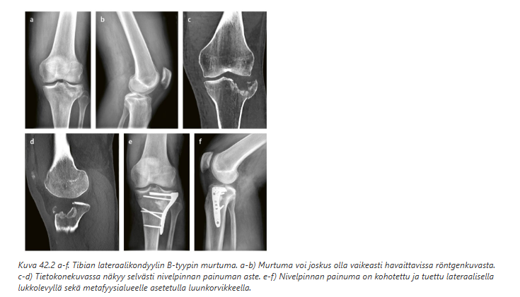6.66 Fibulamurtuma
Valitse yksi
- Voidaan aikuisella hoitaa usein kipsillä
- Proksimaalisen fibulamurtuman hoitovalintaan riittää rtg-kuva
- Kaks muuta (ei wikissä)
Solution.
aa: Pohjeluun murtuma ilman muita liitännäisvammoja on harvinainen, suoran iskun aiheuttama vamma. Yksittäisen pohjeluun vamman hoito on konservatiivinen. Kivun ja turvotuksen hoidoksi määrätään kipulääkitys, ja raajaan voidaan asettaa elastinen sidos jalkaterästä polven tasolle 2‒3 viikon ajaksi. Sidos ei saa olla kiristävä. Laskimotukoksen ehkäisy tulee varmistaa potilaskohtaisesti. Varaus raajaan voidaan sallia heti.
b: Jos todetaan proksimaalinen fibulamurtuma yläsäären rtg-kuvassa, niin tulee myös ottaa nilkan rtg, koska usein tässä on kyseessä ns. Maisonneuven murtuma eli instabiili mediaalinen nilkkavamma proksimaalisen fibulamurtuman yhteydessä (korkea Weber C siis kyseessä)6.67 Potilaalla AKP ja patellan kipu, mikä väittämistä totta
Ei väittämiä wikissä, mutta tässä AKP:stä pari faktaa:
- Anterior knee pain -termillä (AKP) tarkoitetaan polven etuosan kipua. AKP voidaan luokitella retro- tai peripatellaariseksi kivuksi, joka on kestänyt yli kolme kuukautta ilman nivelen sisäistä patologiaa
- AKP on yleinen vaiva urheilussa, ja suurin osa fysioterapiakäyntejä aiheuttavista tuki- ja liikuntaelin vaivoista johtuukin siitä. AKP:tä on aiemmin kutsuttu juoksijan polveksi.
- Nuorilla aikuisilla ja kasvuikäisillä AKP on yleisin polvivaivoja aiheuttava syy hoitoon hakeutumiselle. AKP:tä esiintyy enemmän nais- kuin miespuolisilla
- AKP:lle ominaisia oireita ovat ontuminen sekä polven kipu juostessa, hyppiessä, rappusia kävellessä ja pitkään istuessa polvet koukussa
- Diagnostiikka vaikeaa, mutta yksi testi on Clarken testi eli patellar grind test. Otetaan patella etusormen ja peukalon väliin ja hieman painetaan patellaa alaspäin potilaan maatessa ja polven ollessa ekstensiossa. Pyydetään potilasta jännittämään quadricepsit -> patella liikkuu superiorisesti. Positiivinen löydös on kipu kontraktiossa.
- AKP:tä voidaan hoitaa suurimmalla osalla potilaista konservatiivisesti (kuntoutusharjoittelu ja kipulääkkeet).
6.68 Mikä vaihtoehdoista ei hidasta murtuman paranemista
Valitse yksi
- kortisonilääkitys
- murtumaa ei immobilisoida tarpeeksi
- varfariini
- avomurtuma (wikissä: ehkä?-merkintä, joten vaihtoehto voi olla erilainen oikeasti)
Solution.
c
a: Pitkäaikainen glukokortikoidilääkitys heikentää osteoblastien toimintaa ja hidastaa luutumista
b: Liiallinen liike → luutuminen häiriintyy (usein hypertrofinen nonunion, joka johtuu heikosta immobilisaatiosta -> luun päät liikkuvat runsaasti -> stimuloi kallusta mutta estää luutumisen)
c: Varfariini = antikoagulantti → lisää verenvuotoriskiä mutta ei merkittävästi estä murtuman luutumista
d: avomurtuma = merkittävä pehmytkudosvaurio → luutuminen hidastuu (myös korkea infektioriski ja infektio hidastaa luutumista)6.69 Vasemman käden nimettömässä koukistajajännevamma, joka leikataan. Potilasammatiltaan hitsari tms. Paljonko sairaslomaa?
Valitse yksi
- 3 kk
- 6 kk
- 2 vk
- 1 vk
Solution.
a
Koukistajajännekorjaus palaa täyteen vahvuuteensa n. 3 kk kuluessa. Hitsari tarvitsee toimivat sormet, joten 3kk on sopiva sairasloman määrä.
Sormi kuitenkin mobilisoidaan jo aikaisessa vaiheessa (1-5vrk) suojalastan avulla. Harjoitukset aloitetaan kevyinä, kuormittamattomina passiivisina ja aktiivisina fleksioliikkeinä valitun ohjelman mukaisesti. Harjoitusten oikea suorittaminen on tarkistettava ennen potilaan kotiuttamista.
Potilas käy polikliinisissä mobilisaatiokontrolleissa vähintään 2 viikon välein, ja aktiivisten liikeharjoitusten määrää lisätään asteittain. Sormen vapaa kuormittamaton mobilisaatio sallitaan 6 viikon kuluttua ja kuormitus 8-12 viikon kuluttua korjauksesta.6.70 Mikä on lukkopolvi?
Ei vaihtoehtoja wikissä. Tässä tärkeimmät aiheesta:
- Lukkopolvi = Mekaanisen esteen aiheuttama polven ojennusvajaus
- Taustalla yleensä kierukan luksoitunut sankarepeämä (kassinkahvarepeämä). Molemmista päistään kiinni oleva kierukan sankaosa siirtyy tyypillisesti polvinivelen etuosaan keskelle ja aiheuttaa mekaanisen loppuojennusvajauden
- Jos lukkopolvitilanne ei laukea, polven kiireellinen tähystysleikkaus on aiheellinen. Tämä ei tosin ole yöaikaista leikkausta vaativa tila, joten se voi odottaa aamuun.
- Polven lievän ojennusvajauden voi aiheuttaa myös katkennut eturistiside, jos sen katkenneet päät kääntyvät eteen nivelrakoon
6.71 Kierukan leikkausindikaatiot
Ei vaihtoehtoja wikissä, mutta tässä yleisimpiä indikaatioita:
- Akuutti traumaperäinen vamma: Jos nuorella ihmisellä on vammamekanismilla syntynyt kierukkarepeämä ja selvä invalidisoiva mekaaninen lukko-oire, pyritään korjaamaan leikkauksella 1–2 viikossa.
- Jos degeneratiivinen vamma vaikeaoireinen kons hoidosta riippumatta. Muuten degeneratiiviset repeämät hoidetaan ensisijaisesti konservatiivisesti. Artroosipolvessa lukko-oire helpottaa ajan kanssa, joten pidempi seuranta on perusteltu, vaikka polvi olisikin lukko-oireinen.